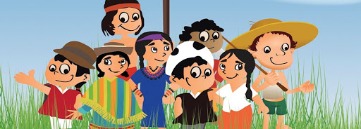

PLURICULTURALIDAD
La pluriculturalidad es la coexistencia de culturas de un mismo lugar geográfico, sin necesidad de que haya mayor relación de intercambio entre ellas. Esta es carecterística de paises que han tenido procesos históricos de colonización, como en Bolivia, Ecuador, México, Perú, etc.
Los paises que lo reconocen, desde su texto constitucional, este se autodenomina un "estado/país pluricultural", puesto allí habitan distintas etnias, culturas y tradiciones.
¿Cómo conservarla?-Importancia
Para nosotros poder cuidar la pluriculturalidad de la discriminación cultural, debemos actuar responsablemente. Ya que esta nos provee una gran cantidad de culturas y experiencias, nos muestra actos de convivencia y coexistencia entre distintas maneras de pensar y las diversas culturas. Algunas ideas de conservación y cuidado son:
¿Qué abarca?
Si bien es cierto, la pluriculturalidad lleva consigo muchas cosas, a parte de la diversidad biológica y la agrobiodiversidad.